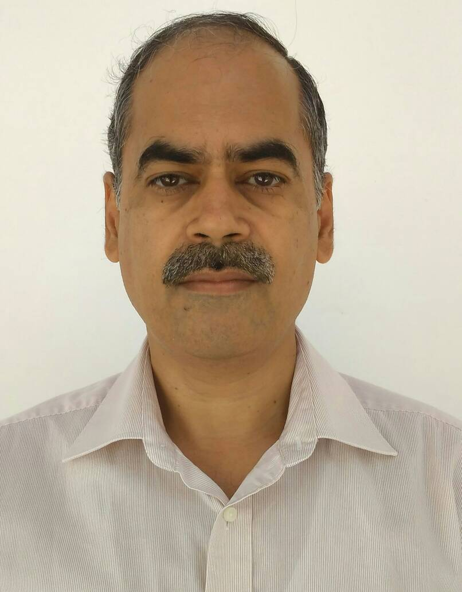
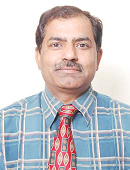
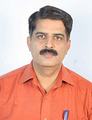

Rajoo Pandey
Designation: Professor
Qualification: Ph.D. (2002), I.I.T. Roorkee
Area of Interest:
- Communication Systems
- Signal Processing
- Neural Networks
- Image Processing
Phone No.: +91-9416840435
Email: rajoo_pandey@nitkkr.ac.in

Brahmjit Singh
Designation: Professor
Qualification: Ph.D. (2005) GGS Indraprastha University, Delhi M.E. Indian Institute of Technology, Roorkee B.E. Malaviya National Institute of Technology, Jaipur
Area of Interest:
- Mobility management in heterogeneous wireless mobile networks, security aspects in wireless networks, cognitive radio networks
- Wireless Sensor Networks
- Research Activities
- Supervising Ph.D. research scholars and M.Tech. students
Future Plans :
- To establish a Centre for Wireless Communication with the aim to develop facilities for conducting research and development activities in the thrust areas of Wireless Communication including Cognitive Radio Networks and theirapplication in Wireless Sensor Networks. The Centre will also provide the facility for students and research scholars for strengthening their core competencies in the area of wireless communication.
- To submit research project to central funding agencies
Phone No.: 01744-233271
Email: brahmjit.s@gmail.com , brahmjit@nitkkr.ac.in

R.K. Sharma
Designation: Professor
Qualification: Ph.D. ( Jan,2007, NIT Kurukshetra)
- Area of Interest:<
- Embedded System Design Applications
- Low Power Digital IC Design,
- Disease Diagnosis in Human beings using Voice Profiling
Research Activities:
- Working and supervising M.Tech. and Ph.D. students in the areas of embedded applications
- low power digital design and disease/ stress detections using voice profiling of human beings.
Future Plans:
- To continue the above mentioned academic interests and research activities.
- To set-up a center of Excellence in VLSI Design and Embedded Systems.
Phone No.: 9896688346
Email: mail2drrks@gmail.com , rksharma@nitkkr.ac.in